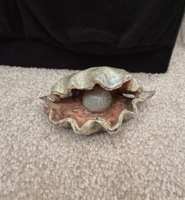

What is Needed
Clay
Water cup
Clay tools
Glaze
Glaze brushes
Table cloth or newpaper
A kiln to fire the piece
Pottery wheel optional

How fun it can be
I think that pottery is fun because you can make what ever you want out of it. I had a project in high school were you had to make a clay project with a lid. I made an upsidedown icecream cone. My other idea was big ben.